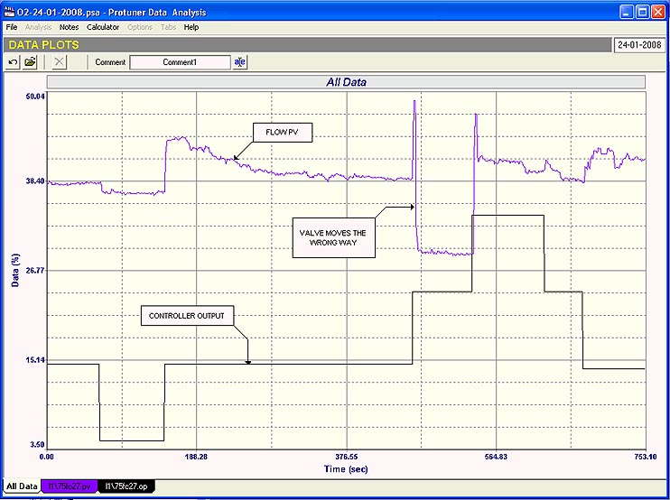
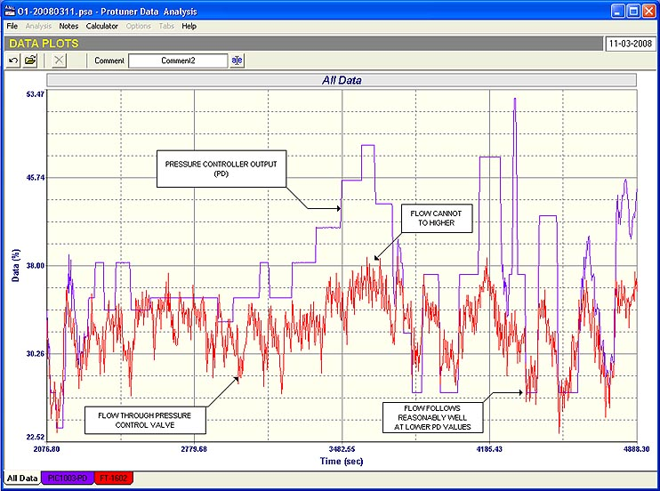

|
| [Home] [About us] [Contact us] [Training] [Optimisation services] [Protuner] |
| [Loop signatures] [Case histories] |
|
Control Loop Case History 101 One of the greatest fallacies that exists in so many process plants is that tuning will sort out all the problems. As soon as a control is not working properly the cry arises from the process people that the loop needs tuning. In most cases the C&I maintenance people send out a person who might spend quite long time playing with the tuning trying to improve things. He or she seldom tries to analyse the loop, which consists of:
This Case History is going to give two examples of
cases where I have been called in to “tune the loop” and
some simple analysis has shown up severe problems. The first is a very simple example, and is of a
temperature control loop in a chemical plant which has always
had to be run in manual. Many
people have unsuccessfully tried to tune the controllers. Luckily the control consisted of a cascade system
with the output of the temperature controller connected to the
setpoint of a flow controller whose output was connected to the
control valve. I say
“luckily”, because as pointed out in a recent Case History,
it is very much easier to analyse valve behaviour if one can
measure the flow through it.
The open loop flow test on the secondary flow loop is
shown in Figure 1.  Fig. 1 The test shows clearly that automatic control is
absolutely impossible with this valve when comparing the
controller’s output signal and the flow through the
valve(hence valve position).
There is virtually no correlation between the two.
At times there are huge overshoots on step changes with
slow return to the correct position.
On occasion the valve actually moves in the reverse
direction to that of the change on the controller’s output
signal. If one had not been able to access the information
given by the flow test, and if the temperature controller had
been connected directly to the valve, as so often happens, it
would have been extremely difficult if not almost impossible, to
try and find out why one could not achieve control. I do find it amazing that the Operators were able
to run this loop at all taking into account that the valve was
effectively working virtually completely “independently” to
the controller. I
also find it even more amazing that this problem had not been
picked up much sooner, and that people were wasting hours of
time trying to tune the controller. The second example is extremely interesting.
I had been asked to try and tune a controller, the
purpose of which was to control the furnace pressure of an arc
furnace. This is
normally a very difficult loop to optimise as arc furnace
pressures tend to jump about quite considerably.
People often say they are “unstable”, which is not a
correct statement. Conditions inside the furnace are very
non-consistent, which causes the pressure to move around in an
intermittent fashion. Also
the pressure transmitters are normally calibrated over a very
small pressure range, typically –5 to +5 mBar (–2 to +2 inches water column).
This is really tiny, and it amplifies the pressure
variations over quite a large percentage of the tiny range of
the transmitter. For various good reasons the process specialists
would like to control these furnaces at a slightly negative
pressure. Many
people think that the pressure control system should be capable
of instantly taking care of all the fluctuations.
This of course is impossible.
The variations occur due to sudden and non-repeatable
changes internally in the furnace, and it would be impossible
for any feedback control system to try and catch them.
In my way of thinking, the changes must be classified as
“noise” which we can define as random fluctuations in the
process variable signal around a mean level.
The control must be set-up so that it smoothly controls
the average pressure, but must be fast enough to also catch
sudden large load changes, which can for example occur if a feed
does suddenly change drastically. In the example under discussion the furnace
pressure control had been a major problem for many years.
The furnace was tripping regularly mostly due to high
pressure trips, and a lot of production was being lost, as it
takes quite a long time to restart the furnace after a trip. To analyse a loop, the most important test is the open loop test, where one makes changes on the output of a controller (that is in manual), and try to ascertain from the recordings information like valve performance and process dynamics. In the case of this furnace we tried running this
test over a period of a day and a half, with very little
success, as the noise (random changes) in the furnace pressure
were so large and numerous that it was almost impossible to
really get any repeatable and reliable information from it. When performing this test four signals were
recorded:
It was extremely useful to have the last two
signals which gave quite a bit of useful information.
Firstly comparison of the valve feedback position with PD
showed that the valve was following the PD extremely well, and
also moved very quickly. This
allayed a worry of the client who had been advised by the
furnace manufacturer that a possible reason for the poor control
was that the valve was moving too slowly. Secondly a comparison of the flow versus PD showed
that the flow was saturating (reaching a maximum) about half way
up the range. This
can be seen in Figure 2.  Fig. 2 If we had not had the valve feedback signal it
could have meant that the valve was not moving past a certain
position, and it would have meant conducting tests on the valve
itself. However
knowing that it was in fact moving well meant looking for a
reason for the flow saturation elsewhere. There could have been several reasons for it.
One could have been that the extraction fan device which
sucked the gases out of the furnace could have problems, and
could not deliver sufficient volume.
Another could be blockage somewhere in the system.
However the most likely reason was due to the fact that
the gas was finally passed through water seal tanks before it
was sent either to a storage tank, or else to stack.
It was felt that the levels in the seal tanks were too
high and were causing a big back-pressure upstream. A test was performed where the levels in the tanks
were lowered slightly. The
flow of gas immediately increased. Unfortunately it is beyond the scope of this
article to delve too far into the workings of this system, but
recommendation were made to the client as to proper control of
the tank levels and to operate the tanks at lower levels, which
would surely alleviate many of the problems being experienced. The important lesson to be learnt from the exercise
though is how important it is to analyse all the information
available in order to solve problems.
Once again if the flow signal had not been available it
would have been very difficult and most probably would have
taken a lot longer to find what was causing the problem. Michael
Brown is a specialist in control loop optimisation, with many years of
experience in process control instrumentation. His main activities are
consulting, and teaching practical control loop analysis and
optimisation. He gives training courses which can be held in clients'
plants, where students can have the added benefit of practising on live
loops. His work takes him to plants all over South Africa, and also to
other countries. He can be contacted at:
|